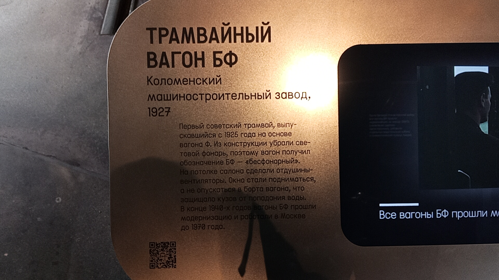
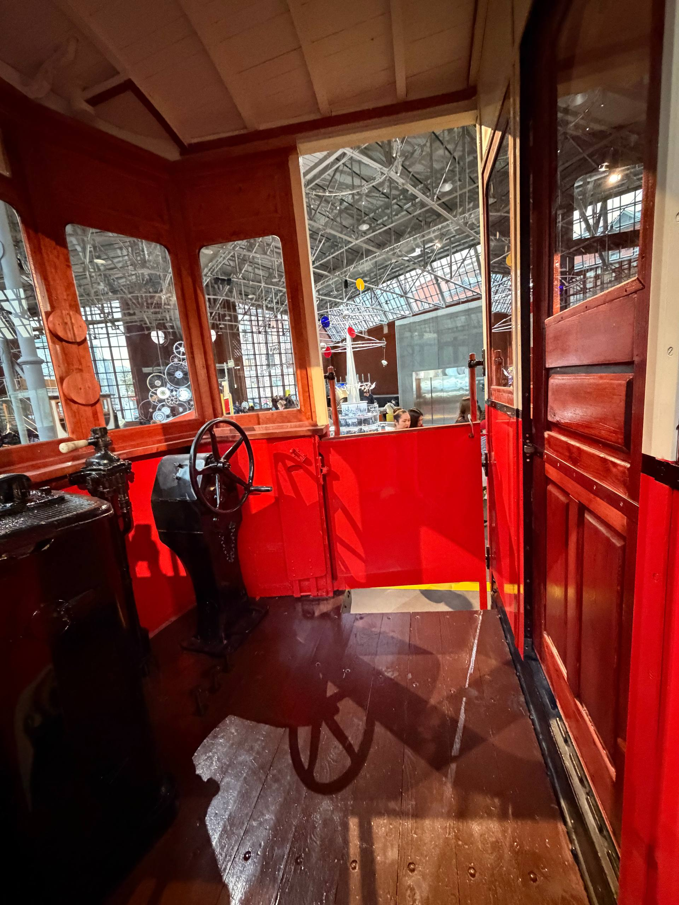
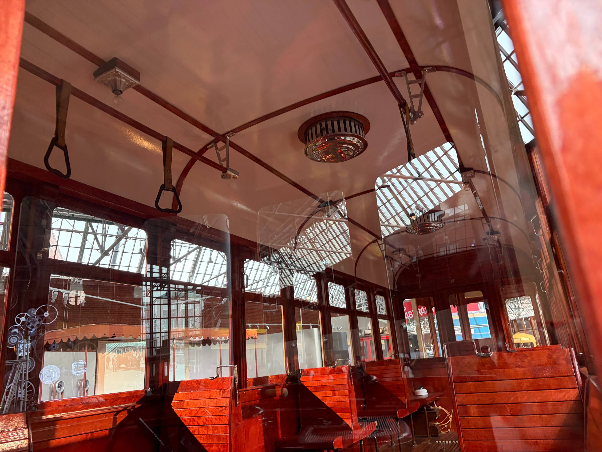

«Бесфонарный» (БФ) № 932
БФ — «бесфонарный» трамвайный вагон, выпускавшийся с 1925 по 1929 год. Название получил из-за отсутствия светового фонаря на крыше, характерного для более ранних вагонов типа Ф.
Данный вагон построен в 1927 году. Прошёл долгий путь от пассажирской эксплуатации и работы буксиром до реставрации и превращения в музейный экспонат.
Общая информация
| Параметр | Значение |
|---|---|
| Город | Москва 🇷🇺 |
| Депо/Парк | Музей Транспорта Москвы |
| Модель | БФ |
| Построен | 1927 |
| Завод-изготовитель | Коломенский завод |
| Текущее состояние | Не эксплуатируется |
| Назначение | Музейный |
История вагона
Постройка
Построен на Коломенском заводе. Начало эксплуатации в депо имени Артамонова.
Краснопресненское депо
Эксплуатация в Краснопресненском депо до списания.
Работа буксиром
Работал буксиром № 3424, первоначально на СВАРЗе, затем на ТРЗ.
Восстановление
Восстановлен в депо имени П.Л. Апакова как исторический экскурсионный вагон № 934.
Возврат номера
Вагону возвращён исторический № 932.
Выставка
Москва — Выставка у ВВЦ на День Города.
Конкурс водителей
Москва — 23-й конкурс водителей трамвая. Участники съёмки фильма «Московские дворики».
Съёмки кино
Москва — Съёмки кинофильма «Исаев» с участием вагона БФ № 932.
100-летие маршрута «А»
Москва — Парад и выставка трамваев к 100-летию маршрута «А».
День города
Москва — Выставка ретротехники в честь Дня города.
115-летие трамвая
Москва — Парад к 115-летию трамвая.
116-летие трамвая
Москва — Парад к 116-летию трамвая.
117-летие трамвая
Москва — Парад к 117-летию трамвая.
118-летие трамвая
Москва — Парад к 118-летию трамвая.
119-летие трамвая
Москва — Парад к 119-летию трамвая.
120-летие трамвая
Москва — Парад к 120-летию трамвая.
123-летие трамвая
Москва — Парад к 123-летию трамвая.
Парад ретротранспорта
Москва, улица Академика Королёва — Парад ретротранспорта.
Реставрация
Проходил реставрацию в фирме «ДизЭТ» (г. Иваново).
Пусконаладка
Перевезён из города Иваново на ТРЗ для пусконаладочных работ.
Передача в музей
Перевезён с ТРЗ в экспозиционный комплекс Музея транспорта Москвы на Новорязанской улице, 27.
Фотогалерея

📌 Музей Транспорта Москвы.
Вагон в музее.

📌 Музей Транспорта Москвы.
Табличка об экспонате. Вагон БФ № 932.

📌 Музей Транспорта Москвы.
Кабина управления.

📌 Музей Транспорта Москвы.
Салон, вид назад.
Нажмите на фото для увеличения
«БФ — значит бесфонарный. Это один из первых советских трамваев, с которого начиналась новая страница истории московского транспорта. И сегодня мы возвратили к жизни один из немногих сохранившихся свидетелей той эпохи».